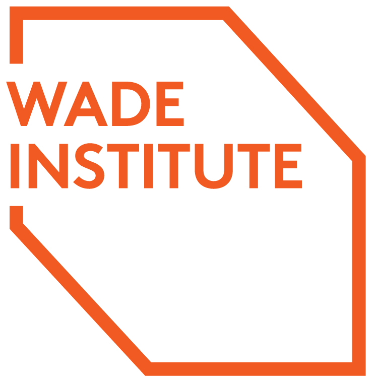
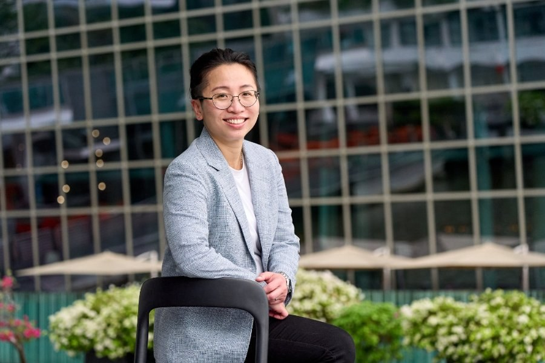
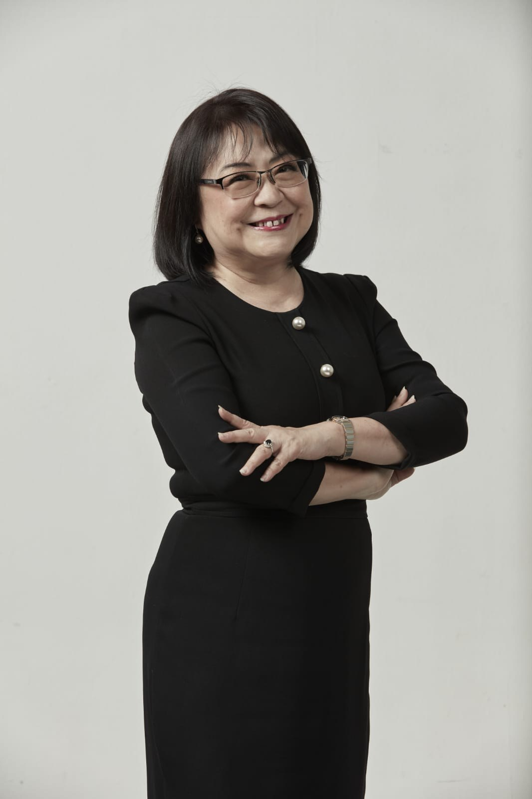
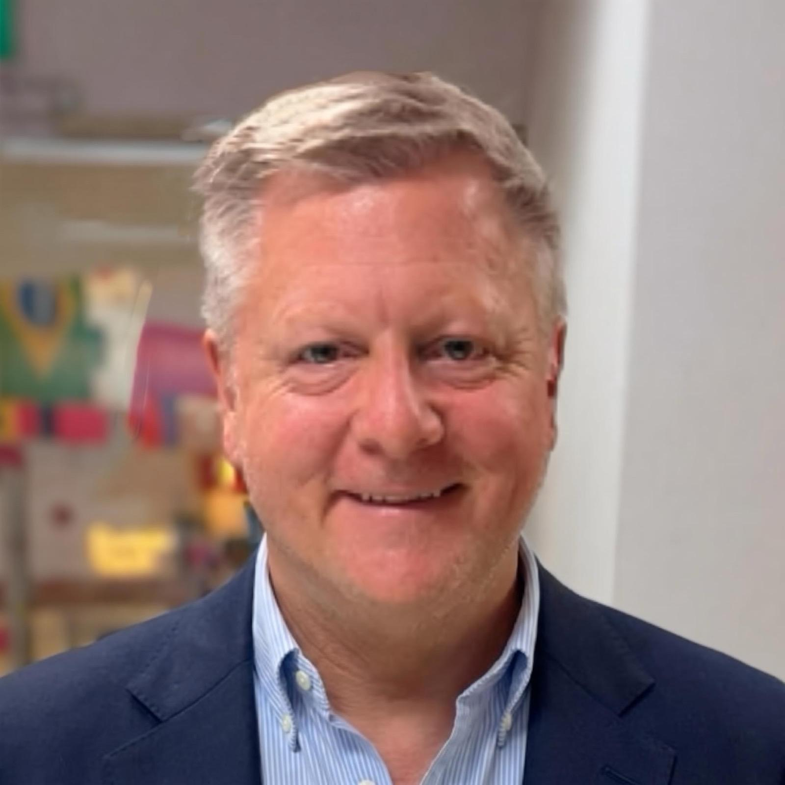

Develop capability
Practical learning that builds entrepreneurial thinking, adaptability and confidence.
Empowering people and organisations to navigate change and shape what's next.
Practical learning that builds entrepreneurial thinking, adaptability and confidence.
Combining our experience with the right people and partners.
Turning ideas and connections into programs, collaborations and commercial possibilities.

AIA partners with Wade Institute of Entrepreneurship at Ormond College, University of Melbourne, combining international expertise with regional insights to build entrepreneurial capability across Asia.
Wade's VC Catalyst program includes practitioners such as Pedram Mokrian, an adjunct lecturer at Stanford University.
“Our partnership creates exciting possibilities to bring entrepreneurial thinking and practical learning to people and organisations across different stages of life.”
Jess Christiansen-Franks
Managing Director, Wade Institute of Entrepreneurship
We bring together expertise, capabilities and partnerships to turn emerging opportunities into practical outcomes.
Future of Longer Lives — an AIA initiative connecting Australia and ASEAN around the opportunities of longer lives, from lifelong learning and economic participation to innovation and collaboration.
Aus–Asia Connect connects market knowledge, expertise and relationships to develop opportunities across Australia and Asia.
Explore Aus–Asia Connect ↗“Aus Asia Connect provides an insightful bridge between two cultures — Singapore and Australia. With genuine business acumen and experience, they build understanding and identify opportunities for companies from either nation.”
Andrea Plawutsky
Senior Program Manager, Haymarket HQ
In Singapore, AIA co-founder Dr Lillian Koh also leads the Centre for Research and Innovation (CRI), founded at NTUitive, Nanyang Technological University. CRI develops research, innovation and institutional collaborations across the region.
We believe in developing the ability to figure things out — to stay curious, navigate uncertainty and find ways forward.
“When the front door isn’t open, find a side door.”
A belief shaped by co-founder Li Si Wong's experience across entrepreneurship, business and unfamiliar markets.

Li Si brings 17 years of experience spanning banking, product leadership, entrepreneurship and cross-border commercial development. Her experience includes helping businesses understand unfamiliar markets, sharpen customer positioning and identify practical pathways forward.
LinkedIn profile
Lillian brings extensive experience in education, research and innovation, including senior roles with Singapore’s Ministry of Education and NTU. She founded FinTech Academy Singapore, with experience in IBF-accredited professional learning programs, and brings deep institutional and regional networks.
LinkedIn profile
Brian brings more than 25 years of experience across Asia spanning education, strategy and organisational development. Based in Malaysia, he combines regional perspective with practical program design and delivery.
LinkedIn profileDeveloping capability, exploring an opportunity or looking for the right expertise? We'd welcome a conversation.
Get in touch ↗